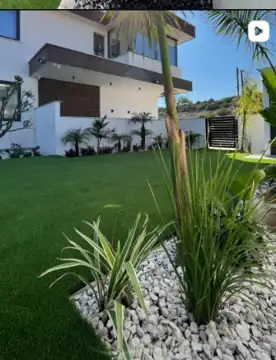

MORE THAN
GARDENS.
Outdoor spaces that feel considered, natural and unmistakably yours — combining Mediterranean character, clean design and expert landscaping.
designed to last
Creating beautiful outdoor spaces
across Cyprus.
From contemporary homes to Mediterranean retreats, Gardenart brings together thoughtful design, quality materials and skilled landscaping to create outdoor environments that are functional, distinctive and built to last.
Real gardens.
Real results.
The portfolio is the strongest proof of the brand. This concept puts Gardenart's own project photography at the centre of the experience, allowing the work to speak first.


From inspiration
to enquiry.
Discover
Immediate visual impact and a clear premium brand position.
Explore
Project-led browsing built around real landscaping work.
Understand
Clear services without clutter or unnecessary complexity.
Enquire
A direct journey from inspiration to a genuine project conversation.
A digital presence as strong as the portfolio.
This private concept demonstrates how Gardenart's established identity and visual content could be translated into a refined, high-performance website built to showcase the work and convert attention into enquiries.
Let's build the digital home
this work deserves.
Private website concept prepared specifically for Gardenart Landscapes.